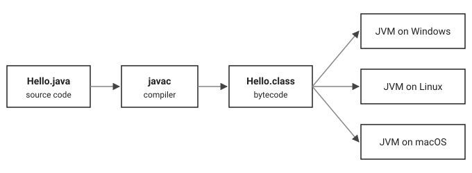
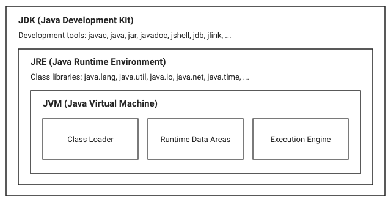

Java is a general-purpose, class-based, object-oriented programming language and computing platform. Java source code is compiled to bytecode, which runs on the Java Virtual Machine (JVM) instead of directly on the hardware. Because every operating system has its own JVM, the same compiled program runs anywhere a JVM is installed: “write once, run anywhere”.
Java was created by James Gosling and his team at Sun Microsystems (it was first called Oak) and released in 1995. Oracle acquired Sun in 2010 and now leads its development through the open-source OpenJDK project. Java is widely used for backend services, enterprise applications, Android apps, big data tools (Kafka, Hadoop, Spark), and desktop and embedded systems.
Simple
Java’s syntax is based on C and C++ but leaves out their hardest parts, such as explicit pointers, operator overloading, multiple inheritance of classes and manual memory management.
Object-Oriented
Programs are built from classes and objects, using encapsulation, inheritance, polymorphism and abstraction. Everything except the primitive types (int, double, boolean and so on) is an object.
Platform Independent
The compiler produces bytecode, not machine code for one processor. Any platform with a JVM can run that bytecode, so a .class or .jar file built on Windows runs unchanged on Linux or macOS.
Architecture Neutral and Portable
The language fixes the size and behavior of primitive types on every platform: an int is always 32 bits and a long is always 64 bits. A program therefore behaves the same way on every machine.
Robust
Strong static typing, compile-time checks, exception handling, array bounds checking and automatic garbage collection prevent many common errors, such as memory leaks from forgotten free calls and writes past the end of an array.
Secure
Java has no pointer arithmetic, and the JVM verifies bytecode before running it, so code cannot read or corrupt arbitrary memory. Class loaders keep application classes separate from core library classes.
Automatic Memory Management
Objects are created with new and never freed by hand. The garbage collector finds objects that are no longer reachable and reclaims their memory.
Multithreaded
Threads, locks and concurrent collections are built into the language and the standard library. Since Java 21, virtual threads make it cheap to run millions of concurrent tasks.
High Performance
The JIT (just-in-time) compiler compiles frequently executed bytecode to optimized native machine code while the program runs, so long-running Java applications reach speeds close to natively compiled languages.
Distributed
Networking is part of the standard library (java.net, java.net.http), which makes it straightforward to build clients, servers and distributed systems.
Dynamic
Classes are loaded when they are first needed, possibly from a network or generated at runtime. Reflection lets a program inspect and use classes it did not know about at compile time; frameworks such as Spring rely on this.

.java file.javac compiler checks the code and translates it into bytecode, stored in a .class file..class files and the verifier checks the bytecode.void main(String[] args) {
IO.println("Hello, World!");
}javac Hello.java # Compile: creates Hello.class
java Hello # Run the bytecode on the JVM
java Hello.java # Java 11+: compile in memory and run in one step
JVM (Java Virtual Machine)
The JVM is the engine that runs bytecode. It loads classes, verifies them, manages memory (heap, stacks and the method area), runs the garbage collector, and executes code with an interpreter and a JIT compiler. The JVM specification is the same everywhere, but each operating system and processor has its own JVM implementation; HotSpot, used by OpenJDK, is the most common. See JVM Architecture and Memory for details.
JRE (Java Runtime Environment)
The JRE is what you need to run a Java program: the JVM plus the Java class libraries (java.lang, java.util, java.io and so on) and supporting files. It has no compiler, so it cannot build programs.
JDK (Java Development Kit)
The JDK is what you need to develop Java programs: everything in the JRE plus development tools such as the compiler (javac), the archiver (jar), the documentation generator (javadoc), the debugger (jdb) and the interactive shell (jshell). Popular JDK distributions include Oracle JDK, Eclipse Temurin, Amazon Corretto and Azul Zulu, all built from OpenJDK.
| JVM | JRE | JDK | |
|---|---|---|---|
| Purpose | Executes bytecode | Runs Java programs | Develops and runs Java programs |
| Contains | Class loader, runtime data areas, execution engine | JVM and class libraries | JRE and development tools |
| Compiler | No (only the JIT, which compiles bytecode) | No | Yes, javac |
| Needed by | Part of the JRE | Users running an application | Developers |
| Platform dependent | Yes | Yes | Yes |
In short: JDK = JRE + development tools, and JRE = JVM + class libraries. The bytecode is platform independent, but the JDK, JRE and JVM themselves are separate downloads for each operating system.
Since Java 11, Oracle and most vendors no longer ship a separate JRE; you install a JDK. To ship an application with a small runtime, use jlink to build a custom runtime image that contains only the modules the application needs.
| Tool | Purpose |
|---|---|
javac | Compiles .java source files to .class bytecode |
java | Starts the JVM and runs a class, a JAR file or a single source file |
jar | Packages classes and resources into a JAR archive |
javadoc | Generates HTML API documentation from source comments |
jshell | Interactive shell for trying out Java code line by line |
jdb | Command-line debugger |
javap | Disassembles a .class file to show its bytecode |
jlink | Builds a custom, minimal Java runtime image |
jpackage | Packages an application as a native installer |
jcmd, jstack, jmap | Diagnose a running JVM: thread dumps, heap dumps, GC and flags |
jconsole, JDK Mission Control | Monitor memory, threads and CPU of a running JVM |
Java SE (Standard Edition)
The core platform: the language, the JVM and the standard libraries for collections, I/O, networking, concurrency and more. The JDK implements Java SE.
Jakarta EE (formerly Java EE)
A set of specifications on top of Java SE for enterprise applications, such as servlets, JPA, CDI and RESTful web services. Oracle handed it to the Eclipse Foundation, which renamed it Jakarta EE.
Java ME (Micro Edition)
A reduced platform for small and embedded devices.
Since Java 10 (2018), a new feature release ships every six months, in March and September. Every few releases is a long-term support (LTS) release, which vendors support for years; most production systems run an LTS version.
| LTS release | Year | Highlights |
|---|---|---|
| Java 8 | 2014 | Lambdas, streams, Optional, the java.time date and time API |
| Java 11 | 2018 | Standard HTTP client, var in lambda parameters, running a single source file with java |
| Java 17 | 2021 | Sealed classes, records, pattern matching for instanceof, text blocks |
| Java 21 | 2023 | Virtual threads, pattern matching for switch, record patterns, sequenced collections |
| Java 25 | 2025 | Compact source files and instance main methods, scoped values, flexible constructor bodies, module import declarations |
See Modern Java for examples of the newer language features.